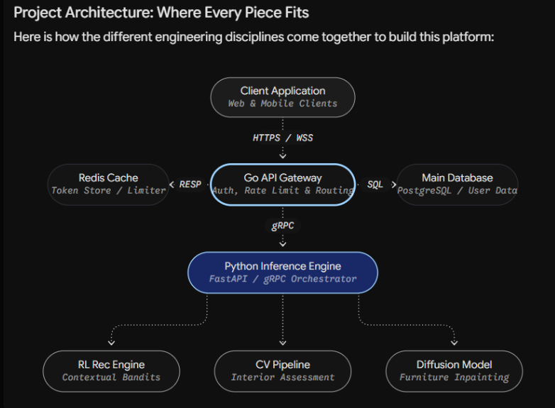

The residential real estate market is oversaturated with platforms that present the same static data—price, square footage, and a few exterior photographs—leaving buyers unable to truly evaluate a property before visiting in person. PRISM solves this by transforming the search experience into a fast, AI-powered discovery loop. Using a Tinder-style swipe interface, a Reinforcement Learning engine silently learns each user's implicit preferences with every interaction. Simultaneously, a Computer Vision layer extracts granular interior features—lighting quality, furniture condition, and spatial proportions—from listing images, while a Diffusion-model visualiser lets users preview their own furniture inside any shortlisted space. The result is the first real estate platform that genuinely knows what you want and shows you exactly what you will get.
| Primary Objective | Build a swipe-first, AI-personalised real estate discovery platform that learns user preferences through implicit feedback and delivers an unprecedented interior view of every property through computer vision and generative AI. |
| Product Workflow | User Onboarding & Preference Seeding → RL-Powered Swipe Feed → Swipe Event Capture (left / right) → Live Model Weight Update → Refined Property Recommendations → Interior Deep Dive (CV analysis) → Furniture Fit Visualiser (Diffusion in-painting) → Property Shortlist → Decision / Contact Agent |
| Core Output | A continuously personalised feed of property cards enriched with interior intelligence, floor-plan compatibility reports, and AI-generated furniture-in-room visualisations — culminating in a ranked shortlist the user can act on. |
| Target Audience | First-time home buyers, urban renters, NRIs conducting remote property searches, and real estate agents who need a faster, smarter way to match clients to listings. |
| ID | Capability | Description & Powering Technology |
|---|---|---|
| 01 | AI Swipe Engine | A Tinder-style swipe interface (left = dislike, right = like) backed by a contextual multi-armed bandit / Reinforcement Learning model. Every swipe event is streamed to the backend, the model weights are updated in real time, and the next batch of property cards is re-ranked accordingly. Powered by Python · PyTorch · Ray RLlib. |
| 02 | Deep Interior Profiler | A Computer Vision pipeline that analyses raw listing images to extract structured interior features: ambient lighting score, existing furniture condition rating (new / worn / poor), estimated room dimensions, and overall cleanliness index. Provides buyers with objective interior intelligence that photographs alone cannot convey. Powered by PyTorch · Torchvision · custom CNN regression models. |
| 03 | Furniture Fit Visualiser | Users describe desired furniture in natural language ("modern L-shaped grey sofa") or upload a photo of a piece they own. A diffusion-based in-painting model composites the item directly into the room photograph with realistic lighting and perspective. Separately, a spatial calculator checks whether the user's existing belongings (given dimensions) physically fit within the room's estimated blueprint. Powered by Stable Diffusion / ControlNet · HuggingFace Diffusers · PyTorch. |
| 04 | Holistic Property Intelligence Cards | Each property card aggregates multi-source data at a glance: current price & 12-month historical trend, locality safety rating (crime data), commute metrics (traffic congestion, distance to nearest metro / airport), and background check flags (prior legal disputes, owner history). Powered by Go · Redis · third-party real estate & government APIs. |
| 05 | Spatial Blueprint Analyser | Parses uploaded floor-plan images or architect PDFs to extract room polygons, dimensions, and flow topology. Used to power the furniture fit spatial calculator and to display an interactive blueprint overlay inside the property detail view. Powered by OpenCV · custom segmentation model · PyTorch. |
| 06 | Cold-Start Resolution Engine | New users have no swipe history. A synthetic preference dataset—generated from realistic buyer persona archetypes—pre-warms the RL model so it can serve meaningful recommendations from the very first session. A short onboarding preference quiz further seeds initial weights before any real swipe data is collected. Powered by Python · synthetic data generation scripts · PyTorch. |
PRISM follows a closed feedback loop: user actions (swipes and prompts) drive model updates, which immediately reshape the output feed, which in turn generates new user actions. The pipeline branches into two parallel tracks — the recommendation track (RL + property cards) and the visualisation track (CV + Diffusion) — that converge on the property detail screen.
| # | Stage | What Happens |
|---|---|---|
| 1 | User Onboarding & Auth | User registers, authenticates (Firebase Auth), and completes a short onboarding quiz capturing budget range, preferred localities, home type (apartment / villa / studio), and style preferences. Quiz responses seed the initial RL model weights. |
| 2 | RL Feed Generation | The Go API gateway requests a ranked batch of property IDs from the Python RL inference server. The model scores candidates using the current user preference vector and returns a prioritised list; Redis caches the result for sub-50ms delivery to the Flutter client. |
| 3 | Swipe Event Streaming | Each left/right swipe is emitted as a lightweight event (user_id, property_id, action, timestamp) and streamed to the Go backend over a persistent WebSocket connection. Token-bucket rate limiting prevents abuse. |
| 4 | Model Weight Update | The Python RL service processes the swipe event, computes the reward signal (right = +1, left = −1, partial view = +0.2), and updates the contextual bandit / policy gradient weights. Updated embeddings are persisted to PostgreSQL and the user's Redis cache entry is invalidated. |
| 5 | Interior CV Analysis | On first ingestion of any property listing, the CV service asynchronously processes all interior images, extracts structured features (lighting, furniture condition, room dimensions), and writes results to the property metadata store. Output is displayed on the property detail card. |
| 6 | Diffusion Visualisation | User submits a natural-language furniture prompt or uploads an image. The inference server batches the request (up to 5 concurrent renders via dynamic batching), runs the ControlNet-guided Stable Diffusion in-painting pipeline, and streams the rendered image back to Flutter. Target latency: < 5 seconds. |
| 7 | Shortlist & Export | Saved/shortlisted properties are persisted to the user's profile in PostgreSQL. Users can share shortlists, compare side-by-side, and trigger a direct agent-contact CTA. |
State persistence: the user's preference embedding vector, swipe history, and shortlist are stored in PostgreSQL and hot-cached in Redis across all sessions, ensuring no context is lost between app restarts.
PRISM uses a microservices architecture with three clearly separated tiers: a cross-platform Flutter client, a Go API gateway handling all business logic and event streaming, and a Python-based AI inference cluster serving the RL, CV, and Diffusion models. Services communicate over REST (Flutter ↔ Go) and gRPC (Go ↔ Python). Redis sits between the gateway and the inference servers for sub-millisecond cache reads.

| Subsystem | Integration Path |
|---|---|
| Swipe & Recommendation Loop | Flutter swipe gesture → WebSocket event (user_id, property_id, action) → Go Gateway (rate-limit check) → gRPC to RL Inference Server → Reward signal computed + embedding updated → PostgreSQL embedding write → Redis cache invalidated → Next feed batch re-ranked & cached → Flutter receives refreshed card stack |
| Interior CV Profiler | New property ingested by Data Pipeline → Images stored to S3 → CV job enqueued (async task queue) → CV Inference Server pulls images from S3 → CNN extracts lighting / condition / dimension features → Structured JSON written to MongoDB → Property card in PostgreSQL marked as CV-enriched → Flutter renders interior feature badges on card |
| Furniture Fit Visualiser | User enters furniture prompt or uploads image in Flutter → Go Gateway forwards payload (prompt + room image URL) → Diffusion Inference Server batches request → ControlNet-guided in-painting runs on GPU → Rendered image uploaded to S3 → Pre-signed S3 URL returned to Go Gateway → Flutter displays rendered image in gallery viewer |
| Spatial Blueprint Analyser | Floor-plan PDF / image uploaded by listing agent → Stored to S3 → Blueprint Analyser (OpenCV + segmentation model) parses polygons & dimensions → Room topology JSON saved to MongoDB → Furniture spatial calculator reads dimensions → Flutter renders interactive blueprint overlay in property detail |
| Holistic Property Card Assembly | Scheduled data ingestion (scrapers + APIs) → Price history + locality safety + commute data fetched → Background check flags retrieved → All fields merged into Property Card record (PostgreSQL) → Go Gateway reads card on feed request → Flutter renders full card with all aggregated data |
| Cold-Start Resolution | New user detected (zero swipe history) → Onboarding quiz responses captured → Responses mapped to synthetic preference archetype → Pre-trained bandit weights loaded for that archetype → Initial feed served immediately → Real swipe events replace synthetic weights progressively |
Ownership follows a subsystem-paired model: each active member is the primary owner of one or two subsystems. The two project heads hold cross-cutting responsibility for architecture decisions, integration, and final deliverable quality.
| Member(s) | Primary Responsibility | Key Components Owned |
|---|---|---|
| Ishan Mani Singh Lead | overall | UNDECIDED |
| Daksh Sablok Lead | overall | UNDECIDED |
| Daniel P Shejoy | overall | UNDECIDED |
| Vaanya Mohil | overall | UNDECIDED |
| Saatwik Gaur | overall | UNDECIDED |
| D V Anirudh | overall | UNDECIDED |
| Sai Prithvi R | overall | UNDECIDED |
| Name | Role | Focus Areas |
|---|---|---|
| Ishan Mani Singh | Project Head | ML architecture, RL strategy, inference engineering, technical review |
| Daksh Sablok | Project Head | Backend systems, API design, product roadmap, team coordination |
| # | Member Name | Role | Department |
|---|---|---|---|
| 1 | Ishan Mani Singh Project Lead | Project Lead | AIML |
| 2 | Daksh Sablok Project Lead | Project Lead | AIML |
| 3 | Daniel P Shejoy | Member | AIML |
| 4 | Vaanya Mohil | Member | AIML |
| 5 | K Ajay Krishna | Member | AIML |
| 6 | Saatwik Gaur | Member | AIML |
| 7 | Ramyashri S | Member | AIML |
| 8 | D V Anirudh | Member | AIML |
| 9 | Harish Krishna J | Member | AIML |
| 10 | Sai Prithvi R | Member | AIML |
| Layer | Choice | Rationale |
|---|---|---|
| Frontend | Flutter (Dart) | Native 60fps swipe animations via Impeller renderer; single codebase for Android, iOS, and Web. Ideal for gesture-heavy, visually rich card stacks. |
| Backend Gateway | Golang | Lightweight goroutines handle thousands of concurrent WebSocket swipe streams with minimal memory overhead. Goroutine-per-connection model outperforms Node.js single-thread under spike load. |
| Cache / Rate Limiter | Redis | Sub-millisecond read latency for hot user feed batches; atomic INCR commands power the token-bucket rate limiter without race conditions. |
| ML Framework | Python PyTorch | Industry standard for CV and Diffusion models. Unmatched pre-trained model availability on HuggingFace. Final models will be exported to ONNX / TensorRT for production speed-up. |
| RL Engine | Ray RLlib Contextual Bandit | Contextual multi-armed bandit provides fast, interpretable preference learning without requiring long episode rollouts. Ray RLlib scales the training loop across multiple CPU/GPU workers. |
| Computer Vision | PyTorch Torchvision OpenCV | ResNet/EfficientNet backbones fine-tuned on interior image datasets for lighting, condition, and dimension regression. OpenCV handles blueprint polygon extraction. |
| Generative AI (Diffusion) | Stable Diffusion ControlNet HuggingFace Diffusers | ControlNet depth/seg conditioning ensures furniture is placed with correct spatial perspective. HuggingFace Diffusers provides ready-to-use in-painting pipelines compatible with PyTorch. |
| Inference Serving | FastAPI gRPC | FastAPI for rapid iteration and REST-compatible model endpoints; gRPC for low-latency Go → Python calls on the critical swipe-event path. Path to NVIDIA Triton for GPU batching in production. |
| Primary Database | PostgreSQL | Stores user accounts, swipe history, preference embeddings (pgvector extension), property listings, and shortlists. ACID guarantees for financial and legal data fields on property cards. |
| Document Store | MongoDB | Flexible JSON documents for unstructured property metadata: CV feature blobs, agent notes, background check reports, and image tag arrays that vary per property. |
| Storage | AWS S3 / Supabase Storage | Object storage for property images, floor-plan PDFs, and diffusion render outputs. Pre-signed URLs enable direct client download without proxying through Go gateway. |
| Authentication | Firebase Auth | Handles email/password and OAuth (Google, Apple) sign-in. JWTs validated at Go gateway middleware. |
| Deployment | AWS EC2 GCP GPU Instances | Go gateway on CPU-optimised EC2; Diffusion and CV servers on GPU instances (NVIDIA A10G / T4). Docker + GitHub Actions CI/CD. |
| Data Tooling | NumPy Pandas Matplotlib Scrapy | Data cleaning, EDA on property datasets, synthetic data generation, and web scraping for listings ingestion. |
| Phase | Focus | Key Deliverables |
|---|---|---|
| Phase 1 Weeks 1 – 3 |
Foundation & Setup |
• PostgreSQL + MongoDB schemas designed and seeded • Go API gateway skeleton with auth middleware (Firebase) • Flutter app scaffold with navigation and swipe gesture prototype • S3 buckets and CI/CD pipeline (GitHub Actions + Docker) configured • Synthetic property preference dataset generated (1,000 buyer personas) |
| Phase 2 Weeks 4 – 7 |
Core AI Build |
• Contextual bandit RL model trained on synthetic data; swipe event loop end-to-end • CV interior-feature extraction CNN trained and served via FastAPI • Holistic Property Card assembled (price history + locality + commute + background check APIs integrated) • Flutter property card UI complete with all data fields • Redis caching and rate-limiter implemented on Go gateway |
| Phase 3 Weeks 8 – 10 |
Integration & Visualisation |
• Stable Diffusion in-painting pipeline with ControlNet running on GPU inference server • Furniture prompt UI and gallery viewer integrated in Flutter • Blueprint Analyser (OpenCV + segmentation) parsing floor-plan images • Spatial furniture-fit calculator live • Full pipeline integration test: swipe → RL update → CV enrichment → Diffusion render |
| Phase 4 Weeks 11 – 13 |
Polish, Optimisation & Demo |
• RL model accuracy tuned on real (team-generated) swipe data; A/B test vs. cold-start baseline • Diffusion inference latency optimised (ONNX / TensorRT export); target < 5 s render time • Flutter UI polished: animations, error states, accessibility • Demo dataset curated: 50+ real property listings with interior images and floor plans • End-to-end demo rehearsed; documentation and slide deck finalised |
| Risk | Mitigation |
|---|---|
|
Technical RL cold-start yields irrelevant first feed New users with zero swipe history may receive generic or poor matches, causing early drop-off before the model can learn. |
Pre-train the bandit on a diverse synthetic dataset covering 1,000 buyer personas. Supplement with a mandatory 5-question onboarding quiz that maps directly to archetype-weight initialisation. Real swipe data progressively replaces synthetic weights within the first session. |
|
Performance Diffusion render latency exceeds user tolerance Stable Diffusion inference on a single GPU can take 10–30 s; concurrent requests compound this significantly. |
Implement dynamic request batching (up to 5 renders per GPU pass) to maximise GPU utilisation. Export the model to TensorRT for 3–5× speed-up. Display a real-time progress animation and stream partial outputs to the Flutter UI so wait time feels shorter. Queue overflow triggers a polite retry message rather than a timeout error. |
|
Data Property listing data availability and freshness Real estate APIs in India have restrictive TOS; scrapers may break on site updates, leaving the demo with stale or sparse data. |
Build and maintain scrapers for at least 2 independent sources (MagicBricks, 99acres). Additionally generate 50+ rich synthetic listings with real interior images (sourced from public domain / Unsplash) for a guaranteed demo dataset. Abstract the data layer so any source can be swapped without touching the AI stack. |
|
ML CV model generalises poorly to low-quality listing photos Real estate photos vary enormously in quality, angle, and lighting; a CNN trained on clean data may fail on dark or blurry images. |
Apply aggressive data augmentation during training (brightness jitter, blur, random crop, compression artefacts). Add a quality-gate that flags images below a sharpness threshold and falls back to a "CV unavailable" label rather than hallucinating features. Track per-image confidence scores and surface low-confidence results to the user transparently. |
|
Timeline Diffusion + RL + CV integration complexity causes schedule slip Three parallel AI workstreams must converge in Phase 3; any one delay cascades to the demo. |
Define strict contract interfaces (gRPC proto files) between Go gateway and each Python service in Week 1, enabling parallel development with mock servers. Phase 2 milestone review at Week 7 gates Phase 3 start; if any module is at risk, scope is cut (Diffusion deferred to Phase 4 if necessary) rather than slipping the demo date. |
|
Team Key member unavailability With multiple inactive members, critical paths could become bottlenecks if an active member becomes unavailable mid-build. |
All code is documented and pushed to the shared GitHub repository weekly. Each active member pair-reviews at least one other subsystem so knowledge is never siloed. Project leads can step into any subsystem as backup. Inactive members are re-engaged at Phase 2 review with clearly scoped, bounded tasks. |
All metrics below are measurable by demo day using the team-generated swipe sessions and the curated 50-property demo dataset. "Indicative" targets will be refined once the end-to-end pipeline runs for the first time.
| Metric | Target (Indicative) | Subsystem |
|---|---|---|
| RL Preference Alignment % of top-10 recommended properties that match a tester's stated preferences after N swipes |
> 80% alignment after 20 swipes per user | RL Engine |
| Furniture Render Latency Wall-clock time from prompt submission to first image displayed in Flutter |
< 5 seconds (P95) on GPU instance | Diffusion Inference |
| CV Interior Feature Accuracy Accuracy of lighting-score and furniture-condition labels vs. human ground-truth annotations on test set |
> 85% accuracy on 200-image test set | Computer Vision |
| Swipe Feed Round-trip Latency Time from swipe event sent to next card stack received by Flutter client |
< 100 ms (P95) under 50 concurrent users | Go Gateway + Redis |
| Cold-Start Quality Score Average tester-rated relevance (1–5) of the very first feed shown before any swipes |
≥ 3.5 / 5 average across 5 blind testers | Cold-Start Engine |
| Blueprint Dimension Parse Accuracy % of rooms correctly segmented and labelled from floor-plan images |
> 80% on 30 curated floor-plan test images | Blueprint Analyser |
| Demo Session Engagement Average active time per live demo session on the platform |
> 8 minutes average session duration | Overall Product |
| End-to-End Pipeline Uptime % of time all services (Go, RL, CV, Diffusion) are simultaneously healthy during demo window |
100% uptime during the 30-minute demo window | Infrastructure |